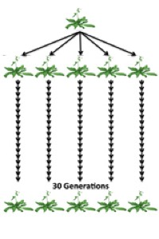
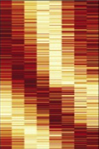
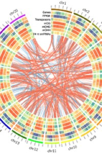
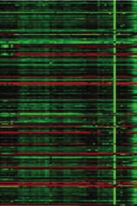

Data Browsers and Downloads

Spontaneous Epialleles

Circadian Epigenomes

Soybean Methylomes

1001 Epigenomes
Annoj browser:
Patterns of Population Epigenomic Diversity
Download data:
GEO RNA-seq
GEO MethylC-seq
SRA
Ref:
Schmitz et al. (2013) Nature
Patterns of Population Epigenomic Diversity
Download data:
GEO RNA-seq
GEO MethylC-seq
SRA
Ref:
Schmitz et al. (2013) Nature